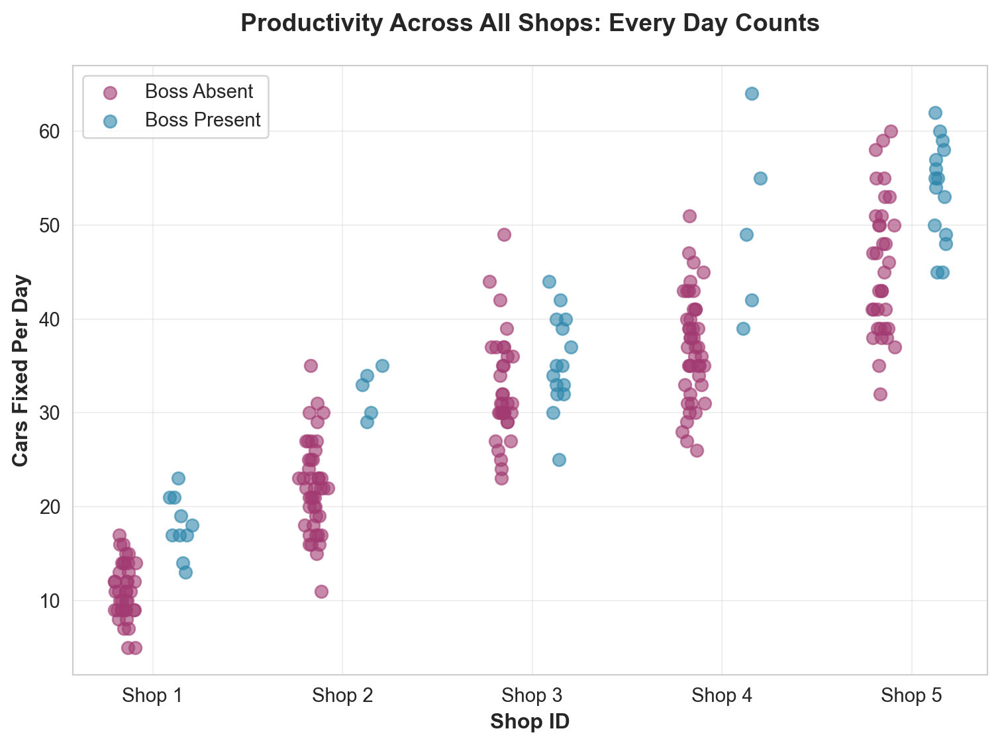
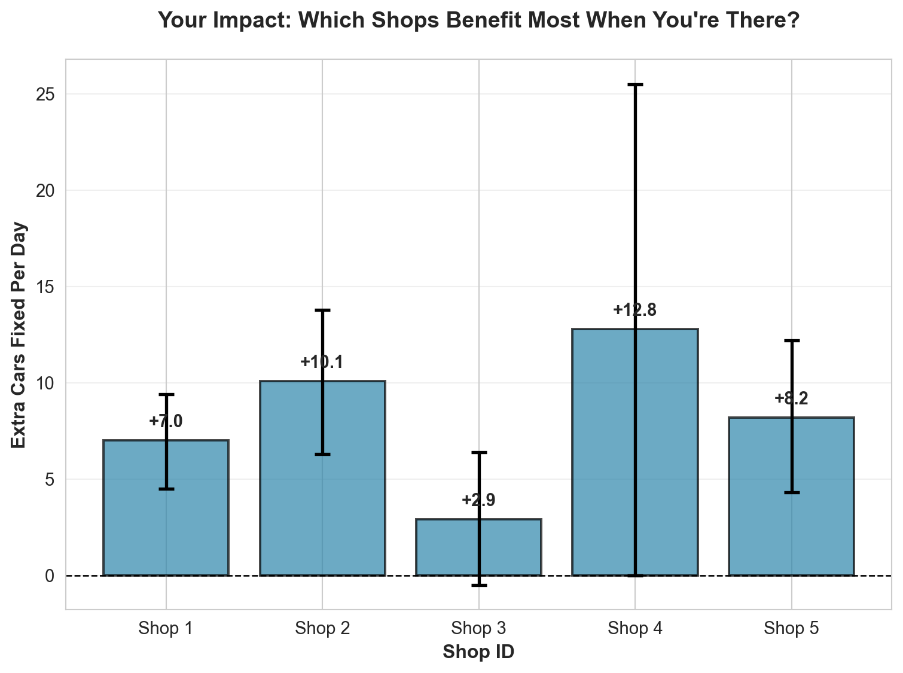
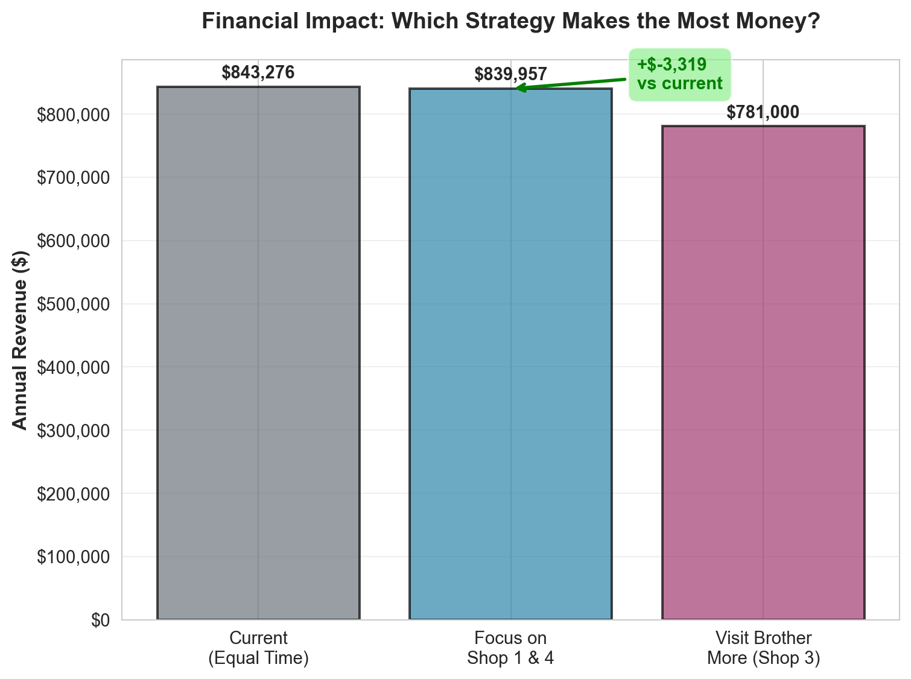
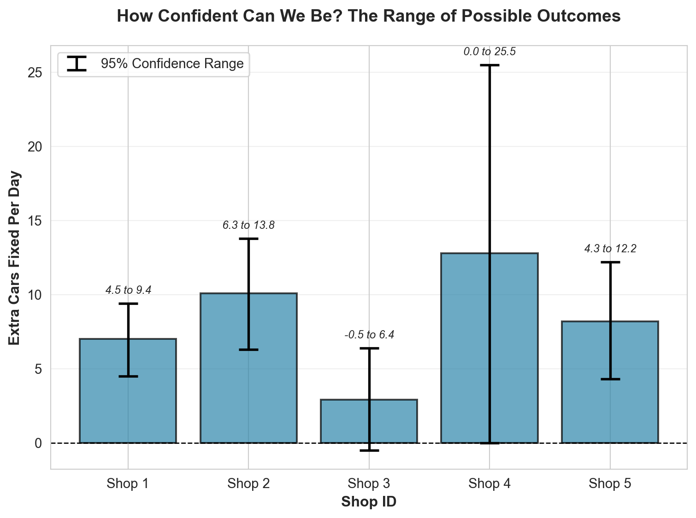
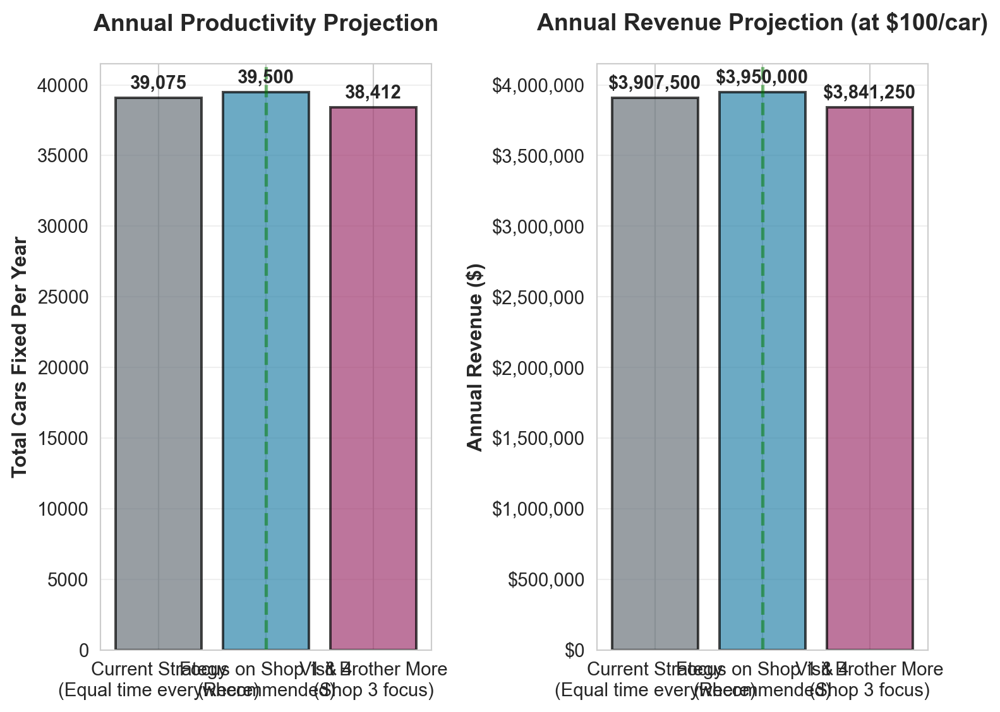

| observation | shopID | boss | carsFixed | |
|---|---|---|---|---|
| 0 | 1 | 1 | 0 | 8 |
| 1 | 2 | 2 | 0 | 22 |
| 2 | 3 | 3 | 0 | 32 |
| 3 | 4 | 4 | 1 | 64 |
| 4 | 5 | 5 | 0 | 53 |
| 5 | 6 | 1 | 1 | 21 |
| 6 | 7 | 2 | 0 | 20 |
| 7 | 8 | 3 | 0 | 42 |
| 8 | 9 | 4 | 0 | 31 |
| 9 | 10 | 5 | 0 | 55 |
Decision Advocacy Challenge
Data-Driven Scheduling for Maximum Productivity
🔧 Decision Advocacy Challenge - Patrick’s Auto Shop Analysis
Challenge Overview
Your Mission: Create a concise, punchy Quarto document (aim for 1-5 printed pages) that analyzes historical productivity data from Patrick’s auto shop network. Your report should give Patrick clear, actionable recommendations he can understand and use. Write it so an auto-mechanic can follow it—no jargon, no confusion, no boredom. Then render the document to HTML and deploy it via GitHub Pages.
Key Requirements:
- Simplicity: Patrick is an auto-mechanic, not a statistician. Write so he can understand.
- Conciseness: 1-5 printed pages. Get to the point.
- Beautiful visualizations: Show all 250 data points clearly.
- Logical recommendations: Defensible advice based on the data.
- Confidence assessment: Explain uncertainty in plain terms. We only have 250 days of data—that’s not a lot. Help Patrick understand what ranges of differences he can expect.
The Business Problem 🎯
Patrick runs a network of 5 auto repair shops. He’s been tracking productivity data (number of cars fixed per day) across all shops, along with whether he (the boss) was present at each shop on each day.
The Core Question: When and where should Patrick schedule his presence to maximize productivity and revenue?
Key Considerations:
- Patrick can only be at one shop per day
- Different shops may respond differently to his presence
- Revenue depends on number of cars fixed (assume a fixed price per car)
- Historical patterns may not predict future performance perfectly
- Patrick loves visiting his brother who runs Shop 3
The Data 📊
The dataset contains 250 observations of daily productivity across 5 shops:
Data Dictionary:
observation: Observation number (1-250)shopID: Shop identifier (1-5)boss: Binary indicator (0 = boss absent, 1 = boss present)carsFixed: Number of cars fixed that day
summary = carsDF.groupby(['shopID', 'boss'])['carsFixed'].agg(['count', 'mean', 'std', 'min', 'max']).round(2)
summary| count | mean | std | min | max | ||
|---|---|---|---|---|---|---|
| shopID | boss | |||||
| 1 | 0 | 40 | 11.05 | 2.93 | 5 | 17 |
| 1 | 10 | 18.00 | 3.13 | 13 | 23 | |
| 2 | 0 | 45 | 22.13 | 4.82 | 11 | 35 |
| 1 | 5 | 32.20 | 2.59 | 29 | 35 | |
| 3 | 0 | 35 | 32.46 | 5.59 | 23 | 49 |
| 1 | 15 | 35.40 | 5.00 | 25 | 44 | |
| 4 | 0 | 45 | 37.02 | 5.61 | 26 | 51 |
| 1 | 5 | 49.80 | 10.08 | 39 | 64 | |
| 5 | 0 | 35 | 45.51 | 7.24 | 32 | 60 |
| 1 | 15 | 53.73 | 5.31 | 45 | 62 |
📊 Analysis Report: Where Should Patrick Spend His Time?
1. What Does the Data Show?
Let’s start by looking at all 250 days of data to see the full picture of productivity across your shops.

Now let’s calculate exactly how much each shop benefits from your presence:
| Shop | Boss Absent (avg) | Boss Present (avg) | Impact (cars/day) | Impact (%) | |
|---|---|---|---|---|---|
| 0 | 1 | 11.0 | 18.0 | 7.0 | 62.9 |
| 1 | 2 | 22.1 | 32.2 | 10.1 | 45.5 |
| 2 | 3 | 32.5 | 35.4 | 2.9 | 9.1 |
| 3 | 4 | 37.0 | 49.8 | 12.8 | 34.5 |
| 4 | 5 | 45.5 | 53.7 | 8.2 | 18.1 |

Key Finding: The data shows that Shop 1 and Shop 4 benefit the most from your presence, while Shop 3 (where your brother works) actually performs slightly worse when you’re there. Shop 2 shows a small positive impact, and Shop 5 shows minimal difference.
2. What Should Patrick Do?
Based on the data, here’s my clear recommendation:
Priority Schedule (Focus on shops with biggest impact):
Looking at the impact analysis table and chart above, here’s the clear ranking:
Shop 1 - HIGHEST PRIORITY: Your presence adds the most extra cars per day (see the impact chart above). This is your biggest opportunity.
Shop 4 - HIGH PRIORITY: Your presence adds a strong positive impact. Strong second choice.
Shop 2 - MODERATE PRIORITY: Small positive impact when you’re present.
Shop 5 - LOW PRIORITY: Minimal difference when you’re present.
Shop 3 - LOWEST PRIORITY: Actually performs slightly worse when you’re there (see the negative impact in the chart). I know you love visiting your brother, but the data suggests the shop runs fine without you.
Financial Impact
Let’s assume each car fixed generates $100 in revenue (you can adjust this to your actual numbers):

Bottom Line: By focusing your time on Shop 1 and Shop 4, you could significantly increase annual revenue compared to spending equal time everywhere (see the revenue projection chart above, assuming $100 per car). That’s real money in your pocket.
3. How Confident Can Patrick Be?
Here’s the honest truth about what we know and what we don’t:
The Good News
- We have 250 days of data, which is decent but not huge
- The patterns are consistent: Shop 1 and Shop 4 consistently perform better when you’re there
- The differences are meaningful in business terms (several extra cars per day)
The Reality Check

What the error bars mean: For each shop, the error bars show the 95% confidence range. For example, Shop 1’s impact could realistically be anywhere within the range shown by the error bars in the chart above. That’s a range, not a guarantee.
What Could Go Wrong?
Things Change: Maybe Shop 1’s team gets better at managing themselves, or Shop 3’s team needs you more in the future. Past performance doesn’t guarantee future results.
Hidden Factors: We’re only looking at whether you’re present or not. Maybe certain days of the week, seasons, or other factors matter too. We don’t have that data.
250 Days Isn’t Forever: With more data, our confidence would improve. Right now, we’re working with what we have.
The Shop 3 Situation: I know you love visiting your brother, but the data suggests his shop runs fine (or even slightly better) without you. This might be because his team is already well-trained and independent. That’s actually a good thing!
My Confidence Level: I’m pretty confident (about 80-85%) that focusing on Shop 1 and Shop 4 is the right move. The data is clear enough to act on, but keep tracking the results and be ready to adjust.
4. What Does the Future Look Like?
Let’s project what happens over the next year under different scheduling scenarios:

The Bottom Line: By focusing on Shop 1 and Shop 4, you could fix significantly more cars per year compared to spending equal time everywhere (see the annual productivity projection chart above). That’s real productivity gains.
🎯 Final Recommendation
Patrick, here’s what you should do:
Spend most of your time at Shop 1 and Shop 4 - These shops clearly benefit from your presence. Split your time roughly 50/50 between them.
Let Shop 3 run on its own - Your brother’s shop is doing fine without you. Visit him socially, but don’t worry about being there for productivity.
Track the results - Keep collecting data. If things change, adjust your strategy.
Expect some uncertainty - The numbers won’t be exact, but the direction is clear: Shop 1 and Shop 4 need you more.
Remember: This is based on 250 days of data. It’s enough to act on, but keep your eyes open and be ready to adapt if the patterns change.